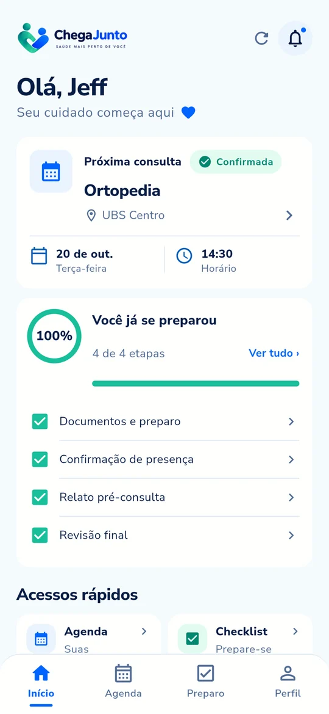
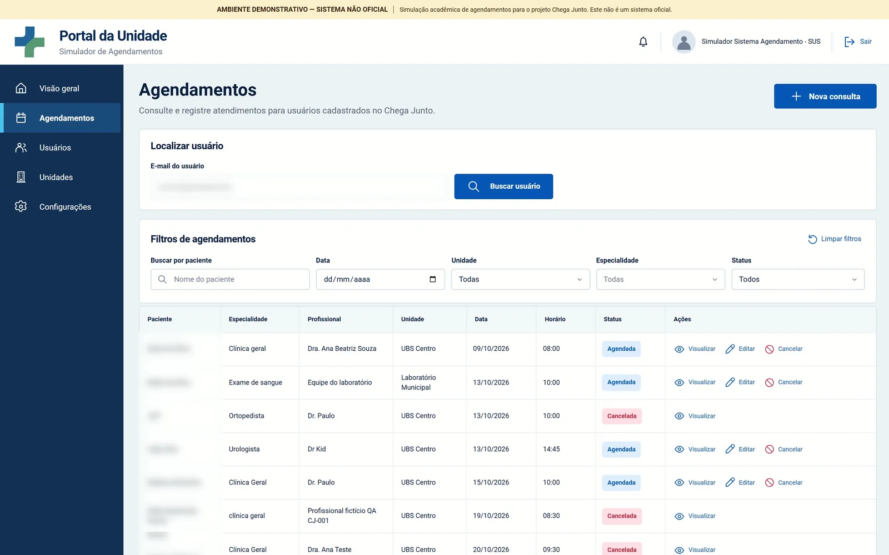
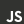
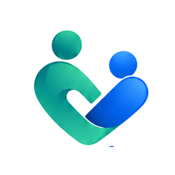

Organizar documentos
Documento com foto, cartão SUS, exames anteriores. Saber o que é obrigatório e o que é opcional.
Conseguir a vaga no SUS parece a parte mais difícil. O Chega Junto cuida do que vem depois: documentos, orientações, presença e o que você quer conversar com o profissional, tudo de forma simples e guiada.

Quando a consulta ou o exame é marcado, começa uma etapa que ninguém vê: se organizar para chegar bem ao atendimento.
Documento com foto, cartão SUS, exames anteriores. Saber o que é obrigatório e o que é opcional.
Preparos, horários de chegada e cuidados que precisam ser lembrados antes do procedimento.
Conseguir explicar com clareza o que está sentindo e levar as dúvidas certas para o profissional.
O Ministério da Saúde reconhece o absenteísmo como uma barreira ao acesso, com aumento das filas, perda de eficiência e desperdício de recursos públicos.
Fonte: Secretaria Municipal de Saúde de Barueri, Audiência Pública do 1º quadrimestre de 2026 (Regulação ambulatorial). Ver documento · Ministério da Saúde, Manual instrutivo NGR/NGC.
E comparecer é só uma parte do desafio. Antes do atendimento ainda existem documentos, orientações e informações para organizar.
O Chega Junto não compete com elas. Ele quer somar numa etapa específica da jornada.
Reúne histórico de saúde, exames e agendamentos. Em serviços integrados, já permite agendar, remarcar ou cancelar consultas.
Avança com notificações, confirmações e lembretes enviados ao cidadão.
Fontes: gov.br, agendar, remarcar ou cancelar consultas em unidades SUS integradas · Nota Técnica Conjunta nº 48/2026 SEIDIGI/SAPS/MS.
Duas pessoas que se unem, formando um check e um gesto de cuidado: o paciente e a equipe de saúde, lado a lado.
De forma simples e guiada, você se organiza antes de encontrar o profissional. O Chega Junto não substitui esse profissional: ajuda você a chegar mais preparado até ele.
Documentos, presença, relato e revisão final, com o progresso sempre visível.
Transcreve, faz perguntas curtas e organiza o que você contou. Nada além disso.
Tudo é revisado e editável. A decisão sobre o que compartilhar continua sendo sua.
Tema escuro, alto contraste, ajuste de texto, leitura por voz e relato por áudio.
Telas reais do aplicativo publicado. Role para acompanhar cada etapa.
Para demonstrar a jornada completa, o MVP tem um portal que simula a etapa feita antes de o paciente chegar ao Chega Junto. O agendamento é salvo no backend, com orientações e documentos de preparo.

O paciente encontra a próxima consulta e todas as informações importantes reunidas: especialidade, unidade, data, horário e o quanto já se preparou.
O que levar, o que lembrar e o que é obrigatório ou opcional. O percentual considera só os itens obrigatórios.
Se não puder ir, você recebe a orientação para avisar a unidade pelos canais oficiais. O aplicativo não faz alterações automáticas no sistema do SUS.
O relato pode ser escrito ou gravado em áudio. Quem se expressa melhor falando pode gravar com calma e revisar a transcrição antes de usar.
A partir do relato, a inteligência artificial faz até três perguntas curtas. Você pode responder, dizer que não sabe ou seguir sem complemento.
Motivo da consulta, pontos relatados, contexto e outros pontos importantes. A IA organiza o que foi dito, sem diagnosticar, prescrever ou interpretar exames.
Selecione e edite perguntas sugeridas para levar à consulta, ou adicione as suas.
Você revisa tudo e conclui. Nada é enviado automaticamente a profissionais, UBS ou SUS: você decide o que compartilhar.
Ela também apoiou o desenvolvimento da ferramenta. Dentro do app, o papel dela é bem definido.
Por isso criamos 15 perfis fictícios com necessidades diferentes e colocamos a jornada à prova. As simulações mostraram onde ela pode evoluir.
Jornada por áudio, com transcrição e revisão antes do uso.
O app registra a situação, mas não cancela a consulta pelo usuário.
Cada preparação permaneceu ligada à consulta certa.
A IA não diagnosticou, não prescreveu e não indicou dose.
Cinco camadas, IA real e mais de 700 testes automatizados.

HTML · CSS · JSportalstore: falseDesenvolvido com apoio de agentes de IA e revisão humana. Ver o código
Problema, solução, demonstração no sistema publicado, personas e próximos passos, em cerca de 7 minutos.
Gratuito, funcionando de verdade e com dados fictícios. Escolha seu aparelho e siga o passo a passo.
O Chega Junto para iPhone é um app web. Depois de adicionado à Tela de Início, ele abre em tela cheia, com ícone próprio, como um aplicativo.
chega-junto-desafio-ia.web.app
Use o Safari, o navegador padrão do iPhone. Toque em “Abrir o app” ou leia o QR code.
É o ícone de quadrado com seta para cima , na barra do Safari.
Role a lista de opções para baixo até encontrar Adicionar à Tela de Início .

Confira o nome Chega Junto e confirme no canto superior direito. Se aparecer, deixe “Abrir como App Web” ativado.
Pronto! Agora é só tocar no ícone do Chega Junto na Tela de Início, como qualquer app.
Não encontrou o botão Compartilhar? Em versões mais recentes do iOS, ele pode estar dentro do menu ao lado da barra de endereço. Em outros navegadores do iPhone a opção também pode existir, mas recomendamos o Safari.
Aplicativo nativo em APK, versão 0.7.0. Como é uma versão de demonstração, ele é instalado direto pelo arquivo, fora da Play Store.
chega-junto-0.7.0.apk · 55 MB
Toque em Baixar APK e aguarde o download de cerca de 55 MB. Requer Android 7.0 ou superior.
Toque na notificação do download ou abra o app Arquivos › Downloads e selecione chega-junto-0.7.0.apk.
Se o Android pedir, toque em Configurações e ative Permitir desta fonte para o navegador ou app de arquivos. Depois volte.
O Play Protect pode exibir um aviso por ser um app de demonstração fora da loja. Nesse caso, toque em Mais detalhes › Instalar mesmo assim.
O ícone aparece na lista de apps. Entre ou crie sua conta e comece a se preparar.
Prefere não instalar o APK? Abra chega-junto-desafio-ia.web.app no Chrome, toque no menu ⋮ e escolha Adicionar à tela inicial ou Instalar app.
O portal simula a etapa que acontece antes do Chega Junto: a unidade registra o atendimento e ele passa a aparecer no aplicativo do paciente. Ideal para abrir no computador.
chega-junto-agendamentos.web.app
agendamento@gmail.com12345678Conta compartilhada só para a demonstração. Use apenas dados fictícios.
Use dados fictícios. É uma demonstração acadêmica. Crie sua conta sem informar dados reais de saúde.
Primeiro acesso pode demorar. O servidor gratuito “dorme” sem uso e pode levar cerca de um minuto para acordar.
IA com limite diário. Para controlar o uso, cada conta tem uma cota diária de organizações e transcrições.
As simulações ajudaram a entender o comportamento da solução. Agora, queremos levá-la a pessoas reais.
App para iPhone e Android, portal, backend e IA real com revisão humana.
Acessibilidade, diferentes níveis de familiaridade com tecnologia e a experiência de preparo.
Melhorar a solução a partir do que aprendermos e refinar os limites da inteligência artificial.
Testar a jornada em um ambiente real, com acompanhamento.
Estudar integrações com os serviços que já fazem parte da jornada.
Experimente a jornada completa no seu celular.